Rembrandt in Russian Museums
The collection of Rembrandt's paintings in Russian Museums is one of the most outstanding in the world. It is concentrated in the Hermitage Museum, St. Petersburg; six more paintings are to be found in the Pushkin Museum of Fine Arts, Moscow. The Russian collection has long enjoyed world fame, being considered, in the nineteenth and early twentieth centuries, the world's finest both in quantity and quality.
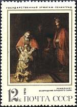
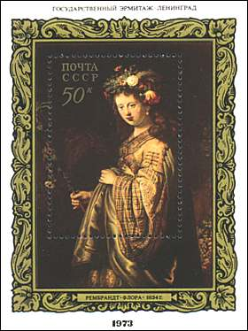
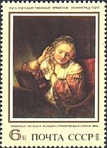
The first Rembrandt paintings appeared in Russia during the rule of Peter the Great, who laid the foundation of Western European art collections in Russia. In the sixties of the eighteenth century was born Hermitage, the Winter Palace picture gallery. The most active role in enriching its collection played the Prince Dmitry Golitsyn, sent by the Empress Catherine the Great to Paris as chargé d'affaires and to The Hague in 1768 as ambassador. It is he who managed to buy Rembrandt's celebrated masterpieces "The Return of Prodigal Son", "Danae" and "Flora".
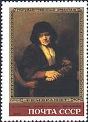
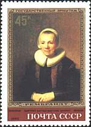
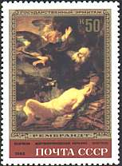
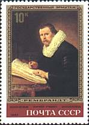
The second half of the 18th century, when the Hermitage collection was in the process of formation, saw a surge of interest in Rembrandt's legacy in Europe. During the age of Romanticism the name of Rembrandt became extremely popular in European intellectual circles.
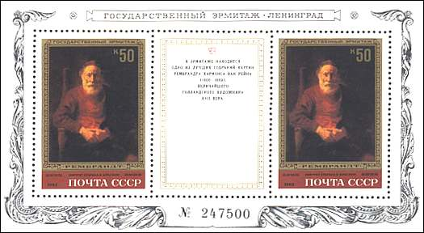
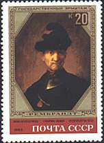
The basic concepts on Rembrandt's art crystallized in the 19th century. Certain features of his art seem to have been established once for all; these are the amazing originality and its incomparable spiritual force, so typical of his mature period.
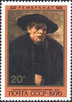
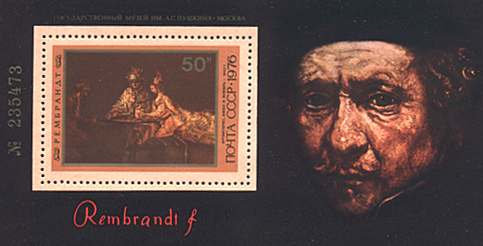
A Rembrandt painting is a highly complicated artistic organism that lives following its own laws; it is an artistic organism that embodies the titanic work of the painters emotions and thoughts. Each painting is a unique work of art, but at the same time it is a link in the long chain of master's creations.
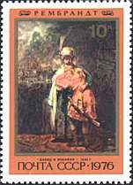
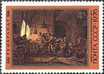
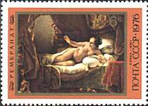
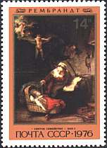
The legacy of Rembrandt the painter consists mainly of portraits and canvases on biblical and mythological subjects; such paintings were called "histories" in the 17th century. Portraits constitute the majority, but for the painter himself the "histories" were far more important. Nevertheless close and multiple ties exist between the portraits and his "histories". (After V. Loewinson-Lessing and X. Yegorova, Rembrandt, Aurora Art Publishers, Leningrad, 1975).
Notice: Some paintings on this page are exhibited in the Pushkin Museum of Fine Arts in Moscow. All of them originate in the Hermitage Museum of St. Petersburg and were transferred in the twenties for political reasons to Moscow by the former Soviet government.